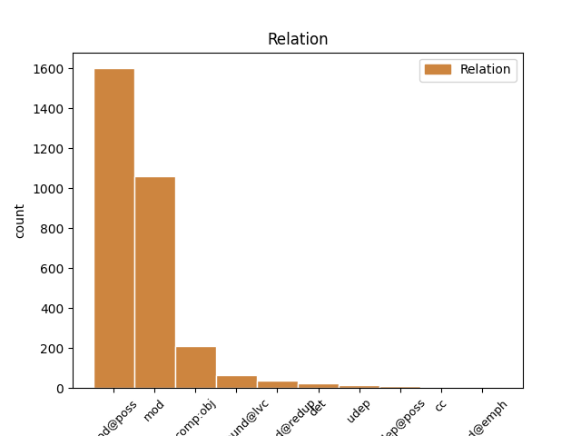
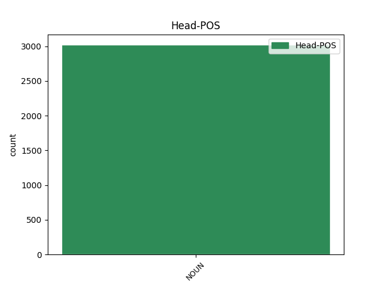
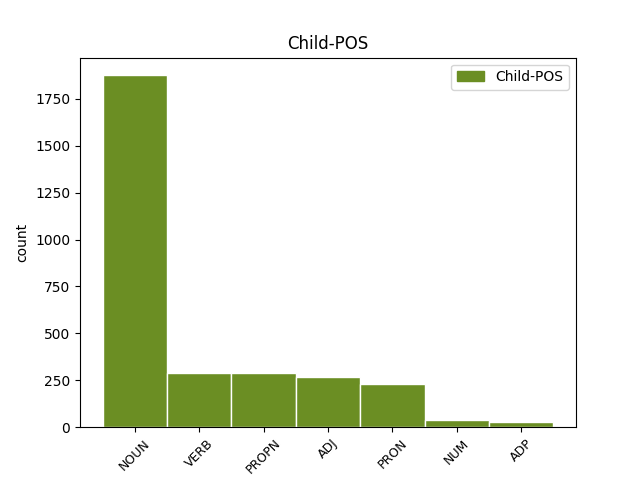

Distribution of features within this leaf



Agreement Rules sorted by frequency.
- When the dependent token is the modifer(mod@poss) of the head token, and the head token is NOUN
1 Üç _ _ _ _ 0 _ _ _
2 ocak _ _ _ _ 0 _ _ _
3 lı _ _ _ _ 0 _ _ _
4 demirci demirci NOUN Noun Case=Nom|Number=Sing|Person=3 5 mod@poss _ _
5 dükkanı dükkan NOUN Noun Case=Nom|Number=Sing|Number[psor]=Sing|Person=3|Person[psor]=3 0 _ _ _
6 deyip _ _ _ _ 0 _ _ _
7 geçme _ _ _ _ 0 _ _ _
8 , _ _ _ _ 0 _ _ _
9 fayton _ _ _ _ 0 _ _ _
10 imalatından _ _ _ _ 0 _ _ _
11 zengin _ _ _ _ 0 _ _ _
12 bile _ _ _ _ 0 _ _ _
13 olmuşlar _ _ _ _ 0 _ _ _
14 . _ _ _ _ 0 _ _ _
1 Yerleştir _ _ _ _ 0 _ _ _
2 yerleştirme _ _ _ _ 0 _ _ _
3 , _ _ _ _ 0 _ _ _
4 devşir _ _ _ _ 0 _ _ _
5 devşirme _ _ _ _ 0 _ _ _
6 sınavları sınav NOUN Noun Case=Nom|Number=Plur|Number[psor]=Sing|Person=3|Person[psor]=3 0 _ _ _
7 falan falan ADJ NAdj Case=Nom|Number=Sing|Person=3 6 mod _ _
8 filan _ _ _ _ 0 _ _ _
9 yok _ _ _ _ 0 _ _ _
10 ... _ _ _ _ 0 _ _ _
1 Bu _ _ _ _ 0 _ _ _
2 süreçle _ _ _ _ 0 _ _ _
3 siyasal _ _ _ _ 0 _ _ _
4 düzlemde _ _ _ _ 0 _ _ _
5 ilişkilendirilen _ _ _ _ 0 _ _ _
6 olgu olgu NOUN Noun Case=Nom|Number=Sing|Person=3 9 comp:obj _ _
7 da _ _ _ _ 0 _ _ _
8 artık _ _ _ _ 0 _ _ _
9 devrimler devrim NOUN Noun Case=Nom|Number=Plur|Person=3 0 _ _ _
10 değil _ _ _ _ 0 _ _ _
11 , _ _ _ _ 0 _ _ _
12 devrim _ _ _ _ 0 _ _ _
13 siz _ _ _ _ 0 _ _ _
14 lik _ _ _ _ 0 _ _ _
15 ve _ _ _ _ 0 _ _ _
16 küreselleşme _ _ _ _ 0 _ _ _
17 süreci _ _ _ _ 0 _ _ _
18 dir _ _ _ _ 0 _ _ _
19 . _ _ _ _ 0 _ _ _
1 Komşuların _ _ _ _ 0 _ _ _
2 kapılarını _ _ _ _ 0 _ _ _
3 teker teker NOUN Noun Case=Nom|Number=Sing|Person=3 0 _ _ _
4 teker teker NOUN Noun Case=Nom|Number=Sing|Person=3 3 compound@redup _ _
5 çalıp _ _ _ _ 0 _ _ _
6 iş _ _ _ _ 0 _ _ _
7 istemiş _ _ _ _ 0 _ _ _
8 . _ _ _ _ 0 _ _ _
1 Nedenini _ _ _ _ 0 _ _ _
2 anlayamadığım _ _ _ _ 0 _ _ _
3 bu _ _ _ _ 0 _ _ _
4 terk terk NOUN Noun Case=Nom|Number=Sing|Person=3 0 _ _ _
5 edilme et VERB Verb Aspect=Perf|Case=Nom|Mood=Ind|Polarity=Pos|Tense=Pres|VerbForm=Vnoun|Voice=Pass 4 compound@lvc _ _
6 korkusu _ _ _ _ 0 _ _ _
7 ve _ _ _ _ 0 _ _ _
8 kendime _ _ _ _ 0 _ _ _
9 itiraf _ _ _ _ 0 _ _ _
10 etmekten _ _ _ _ 0 _ _ _
11 bile _ _ _ _ 0 _ _ _
12 utandığım _ _ _ _ 0 _ _ _
13 hırpalayıcı _ _ _ _ 0 _ _ _
14 kıskançlığımla _ _ _ _ 0 _ _ _
15 , _ _ _ _ 0 _ _ _
16 aptalca _ _ _ _ 0 _ _ _
17 olduğunu _ _ _ _ 0 _ _ _
18 bile _ _ _ _ 0 _ _ _
19 bile _ _ _ _ 0 _ _ _
20 daha _ _ _ _ 0 _ _ _
21 çok _ _ _ _ 0 _ _ _
22 kadınla _ _ _ _ 0 _ _ _
23 birlikte _ _ _ _ 0 _ _ _
24 oluyor _ _ _ _ 0 _ _ _
25 ve _ _ _ _ 0 _ _ _
26 sonunda _ _ _ _ 0 _ _ _
27 korktuğuma _ _ _ _ 0 _ _ _
28 uğrayıp _ _ _ _ 0 _ _ _
29 bir _ _ _ _ 0 _ _ _
30 başka _ _ _ _ 0 _ _ _
31 erkek _ _ _ _ 0 _ _ _
32 için _ _ _ _ 0 _ _ _
33 terk _ _ _ _ 0 _ _ _
34 ediliyordum _ _ _ _ 0 _ _ _
35 . _ _ _ _ 0 _ _ _
1 Tam _ _ _ _ 0 _ _ _
2 da _ _ _ _ 0 _ _ _
3 o o PRON Demons Case=Nom|Number=Sing|Person=3|PronType=Dem 4 det _ _
4 satır satır NOUN Noun Case=Nom|Number=Sing|Person=3 0 _ _ _
5 gibi _ _ _ _ 0 _ _ _
6 ydim _ _ _ _ 0 _ _ _
7 o _ _ _ _ 0 _ _ _
8 sabah _ _ _ _ 0 _ _ _
9 , _ _ _ _ 0 _ _ _
10 bir _ _ _ _ 0 _ _ _
11 başkası _ _ _ _ 0 _ _ _
12 gibi _ _ _ _ 0 _ _ _
13 , _ _ _ _ 0 _ _ _
14 pişman _ _ _ _ 0 _ _ _
15 ve _ _ _ _ 0 _ _ _
16 sıkıntı _ _ _ _ 0 _ _ _
17 lı _ _ _ _ 0 _ _ _
18 . _ _ _ _ 0 _ _ _
1 Yedi _ _ _ _ 0 _ _ _
2 saat _ _ _ _ 0 _ _ _
3 lik lik ADP Ness Case=Nom|Number=Sing|Person=3 4 udep _ _
4 yolculuk yolculuk NOUN Noun Case=Nom|Number=Sing|Person=3 0 _ _ _
5 boyunca _ _ _ _ 0 _ _ _
6 - _ _ _ _ 0 _ _ _
7 ki _ _ _ _ 0 _ _ _
8 yetmiş _ _ _ _ 0 _ _ _
9 kilometre _ _ _ _ 0 _ _ _
10 kat _ _ _ _ 0 _ _ _
11 edecektik _ _ _ _ 0 _ _ _
12 - _ _ _ _ 0 _ _ _
13 bir _ _ _ _ 0 _ _ _
14 tek _ _ _ _ 0 _ _ _
15 eve _ _ _ _ 0 _ _ _
16 rastlamanın _ _ _ _ 0 _ _ _
17 mümkün _ _ _ _ 0 _ _ _
18 olmadığı _ _ _ _ 0 _ _ _
19 bir _ _ _ _ 0 _ _ _
20 coğrafya _ _ _ _ 0 _ _ _
21 . _ _ _ _ 0 _ _ _
1 Bu _ _ _ _ 0 _ _ _
2 süreçle _ _ _ _ 0 _ _ _
3 siyasal _ _ _ _ 0 _ _ _
4 düzlemde _ _ _ _ 0 _ _ _
5 ilişkilendirilen _ _ _ _ 0 _ _ _
6 olgu _ _ _ _ 0 _ _ _
7 da _ _ _ _ 0 _ _ _
8 artık _ _ _ _ 0 _ _ _
9 devrimler _ _ _ _ 0 _ _ _
10 değil _ _ _ _ 0 _ _ _
11 , _ _ _ _ 0 _ _ _
12 devrim _ _ _ _ 0 _ _ _
13 siz _ _ _ _ 0 _ _ _
14 lik lik ADP Ness Case=Nom|Number=Sing|Person=3 17 udep@poss _ _
15 ve _ _ _ _ 0 _ _ _
16 küreselleşme _ _ _ _ 0 _ _ _
17 süreci süreç NOUN Noun Case=Nom|Number=Sing|Number[psor]=Sing|Person=3|Person[psor]=3 0 _ _ _
18 dir _ _ _ _ 0 _ _ _
19 . _ _ _ _ 0 _ _ _
1 Ulaştırma _ _ _ _ 0 _ _ _
2 Bakanı _ _ _ _ 0 _ _ _
3 Binali _ _ _ _ 0 _ _ _
4 Yıldırım _ _ _ _ 0 _ _ _
5 da _ _ _ _ 0 _ _ _
6 , _ _ _ _ 0 _ _ _
7 kazayla _ _ _ _ 0 _ _ _
8 ilgili _ _ _ _ 0 _ _ _
9 beşi _ _ _ _ 0 _ _ _
10 bakanlık _ _ _ _ 0 _ _ _
11 , _ _ _ _ 0 _ _ _
12 biri _ _ _ _ 0 _ _ _
13 THY _ _ _ _ 0 _ _ _
14 görevlisi _ _ _ _ 0 _ _ _
15 altı _ _ _ _ 0 _ _ _
16 kişiden _ _ _ _ 0 _ _ _
17 oluşan _ _ _ _ 0 _ _ _
18 kaza kaza NOUN Noun Case=Nom|Number=Sing|Person=3 20 cc _ SpaceAfter=No
19 - _ _ _ _ 0 _ _ _
20 kırım kırım NOUN Noun Case=Nom|Number=Sing|Person=3 0 _ _ _
21 ekibi _ _ _ _ 0 _ _ _
22 oluşturduklarını _ _ _ _ 0 _ _ _
23 ve _ _ _ _ 0 _ _ _
24 kaza _ _ _ _ 0 _ _ _
25 yerinde _ _ _ _ 0 _ _ _
26 incelemelerini _ _ _ _ 0 _ _ _
27 sürdüreceklerini _ _ _ _ 0 _ _ _
28 kaydetti _ _ _ _ 0 _ _ _
29 . _ _ _ _ 0 _ _ _
1 Ne ne PRON Ques Case=Nom|Number=Sing|Person=3 2 mod@emph _ _
2 tuhaf tuhaf NOUN Noun Case=Nom|Number=Sing|Person=3 0 _ _ _
3 şeyler _ _ _ _ 0 _ _ _
4 değil _ _ _ _ 0 _ _ _
5 mi _ _ _ _ 0 _ _ _
6 , _ _ _ _ 0 _ _ _
7 şu _ _ _ _ 0 _ _ _
8 anlattıklarım _ _ _ _ 0 _ _ _
9 size _ _ _ _ 0 _ _ _
10 ? _ _ _ _ 0 _ _ _
Disagree Examples:
1 Yasal _ _ _ _ 0 _ _ _
2 Valium _ _ _ _ 0 _ _ _
3 , _ _ _ _ 0 _ _ _
4 Diazem _ _ _ _ 0 _ _ _
5 gibi _ _ _ _ 0 _ _ _
6 haplardan _ _ _ _ 0 _ _ _
7 eroine _ _ _ _ 0 _ _ _
8 geçenler _ _ _ _ 0 _ _ _
9 arasında ara ADJ NAdj Case=Loc|Number=Sing|Number[psor]=Sing|Person=3|Person[psor]=3 15 mod _ _
10 beni _ _ _ _ 0 _ _ _
11 en _ _ _ _ 0 _ _ _
12 çok _ _ _ _ 0 _ _ _
13 şaşkınlığa _ _ _ _ 0 _ _ _
14 düşüren _ _ _ _ 0 _ _ _
15 kişi kişi NOUN Noun Case=Nom|Number=Sing|Person=3 0 _ _ _
16 , _ _ _ _ 0 _ _ _
17 yetmiş _ _ _ _ 0 _ _ _
18 yaşlarında _ _ _ _ 0 _ _ _
19 şık _ _ _ _ 0 _ _ _
20 giyim _ _ _ _ 0 _ _ _
21 li _ _ _ _ 0 _ _ _
22 bir _ _ _ _ 0 _ _ _
23 kadın _ _ _ _ 0 _ _ _
24 oldu _ _ _ _ 0 _ _ _
25 . _ _ _ _ 0 _ _ _
1 Yasal _ _ _ _ 0 _ _ _
2 Valium _ _ _ _ 0 _ _ _
3 , _ _ _ _ 0 _ _ _
4 Diazem _ _ _ _ 0 _ _ _
5 gibi _ _ _ _ 0 _ _ _
6 haplardan _ _ _ _ 0 _ _ _
7 eroine _ _ _ _ 0 _ _ _
8 geçenler _ _ _ _ 0 _ _ _
9 arasında _ _ _ _ 0 _ _ _
10 beni ben PRON Pers Case=Acc|Number=Sing|Person=1|PronType=Prs 13 comp:obj _ _
11 en _ _ _ _ 0 _ _ _
12 çok _ _ _ _ 0 _ _ _
13 şaşkınlığa şaşkınlık NOUN Noun Case=Dat|Number=Sing|Person=3 0 _ _ _
14 düşüren _ _ _ _ 0 _ _ _
15 kişi _ _ _ _ 0 _ _ _
16 , _ _ _ _ 0 _ _ _
17 yetmiş _ _ _ _ 0 _ _ _
18 yaşlarında _ _ _ _ 0 _ _ _
19 şık _ _ _ _ 0 _ _ _
20 giyim _ _ _ _ 0 _ _ _
21 li _ _ _ _ 0 _ _ _
22 bir _ _ _ _ 0 _ _ _
23 kadın _ _ _ _ 0 _ _ _
24 oldu _ _ _ _ 0 _ _ _
25 . _ _ _ _ 0 _ _ _
1 Yasal _ _ _ _ 0 _ _ _
2 Valium _ _ _ _ 0 _ _ _
3 , _ _ _ _ 0 _ _ _
4 Diazem _ _ _ _ 0 _ _ _
5 gibi _ _ _ _ 0 _ _ _
6 haplardan _ _ _ _ 0 _ _ _
7 eroine _ _ _ _ 0 _ _ _
8 geçenler _ _ _ _ 0 _ _ _
9 arasında _ _ _ _ 0 _ _ _
10 beni _ _ _ _ 0 _ _ _
11 en _ _ _ _ 0 _ _ _
12 çok _ _ _ _ 0 _ _ _
13 şaşkınlığa şaşkınlık NOUN Noun Case=Dat|Number=Sing|Person=3 15 mod _ _
14 düşüren _ _ _ _ 0 _ _ _
15 kişi kişi NOUN Noun Case=Nom|Number=Sing|Person=3 0 _ _ _
16 , _ _ _ _ 0 _ _ _
17 yetmiş _ _ _ _ 0 _ _ _
18 yaşlarında _ _ _ _ 0 _ _ _
19 şık _ _ _ _ 0 _ _ _
20 giyim _ _ _ _ 0 _ _ _
21 li _ _ _ _ 0 _ _ _
22 bir _ _ _ _ 0 _ _ _
23 kadın _ _ _ _ 0 _ _ _
24 oldu _ _ _ _ 0 _ _ _
25 . _ _ _ _ 0 _ _ _
1 Tombul _ _ _ _ 0 _ _ _
2 dizleri _ _ _ _ 0 _ _ _
3 , _ _ _ _ 0 _ _ _
4 masanın _ _ _ _ 0 _ _ _
5 altından _ _ _ _ 0 _ _ _
6 Mahmut'un Mahmut PROPN Prop Case=Gen|Number=Sing|Person=3 7 mod@poss _ _
7 dizlerine diz NOUN Noun Case=Dat|Number=Plur|Number[psor]=Sing|Person=3|Person[psor]=3 0 _ _ _
8 yapışmıştı _ _ _ _ 0 _ _ _
9 . _ _ _ _ 0 _ _ _
1 Bu _ _ _ _ 0 _ _ _
2 sefer _ _ _ _ 0 _ _ _
3 aklına _ _ _ _ 0 _ _ _
4 Milli _ _ _ _ 0 _ _ _
5 Savunma _ _ _ _ 0 _ _ _
6 Bakanlığı'nın _ _ _ _ 0 _ _ _
7 Askeri _ _ _ _ 0 _ _ _
8 Usul _ _ _ _ 0 _ _ _
9 Ceza _ _ _ _ 0 _ _ _
10 Yasası'na _ _ _ _ 0 _ _ _
11 göre _ _ _ _ 0 _ _ _
12 elinde el NOUN Noun Case=Loc|Number=Sing|Number[psor]=Sing|Person=3|Person[psor]=3 15 mod _ _
13 tuttuğu _ _ _ _ 0 _ _ _
14 bir _ _ _ _ 0 _ _ _
15 yetki yetki NOUN Noun Case=Nom|Number=Sing|Person=3 0 _ _ _
16 geldi _ _ _ _ 0 _ _ _
17 . _ _ _ _ 0 _ _ _